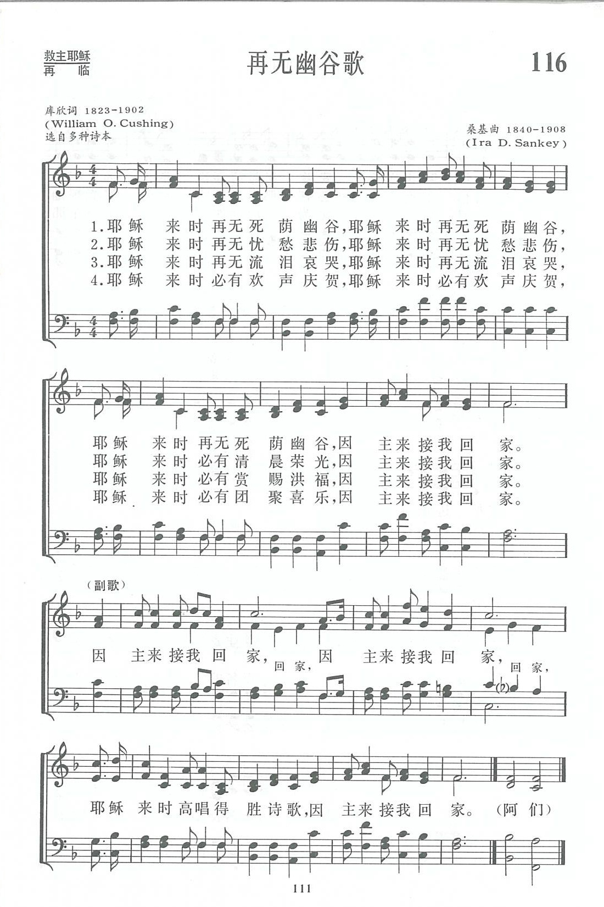

|
|
讚美詩(新編) |
|
1 There’ll be no dark valley when Jesus comes, Refrain: 2 There’ll be no more sorrow when Jesus comes, 3 There’ll be no more weeping when Jesus comes, 4 There’ll be songs of greeting when Jesus comes, |
|
|
https://www.zanmeishige.com/tab/13789.html?songbook=1&index=116

|
|
|
|
|


https://youtu.be/H4SIHwfz59w -
There'll Be No Dark Valley · Altar of Praise Chorale
https://youtu.be/jfnxmrL6M20 - No Dark Valley (Apache Hymnal Lyrics)
https://youtu.be/f7VPs5UCE6U
| Text: | There'll Be No Dark Valley |
| Author: | William O. Cushing |
| Tune: | [There'll be no dark valley when Jesus comes] |
| Composer: | Ira D. Sankey |
| Short Name: | W. O. Cushing |
| Full Name: | Cushing, W. O. (William Orcutt), 1823-1903 |
| Birth Year: | 1823 |
| Death Year: | 1903 |
Rv William Orcutt Cushing USA 1823-1903.

Born at Hingham, MA, he read the Bible as a teenager and became a follower of the Orthodox Christian school of thought. At age 18 he decided to become a minister, following in his parents theology. His first pastorate was at the Christian Church, Searsburg, NY. He married Hena Proper in 1854. She was a great help to him throughout his ministry. He ministered at several NY locations over the years, including Searsburg, Auburn, Brookley, Buffalo, and Sparta. Hena died in 1870, and he returned to Searsburg, again serving as pastor there. Working diligently with the Sunday school, he was dearly beloved by young and old. Soon after, he developed a creeping paralysis that caused him to lose his voice. He retired from ministry after 27 years. He once gave all his savings ($1000) to help a blind girl receive an education. He was instrumental in the erection of the Seminary at Starkey, NY. He gave material aid to the school for the blind at Batavia. He was mindful of the suffering of others, but oblivious to his own. After retiring, he asked God to give him something to do. He discovered he had a talent for writing and kept busy doing that. He authored about 300 hymn lyrics. The last 13 years of his life he lived with Rev. and Mrs. E. E Curtis at Lisbon Center, NY, and joined with the Wesleyan Methodist Church there. He died at Searsburg, NY.
John Perry

第116首 再无幽谷歌 There’ll be no dark valley _W．O．Cushing
经文：“我虽然行过死荫的幽谷，也不怕遭害”(诗23：4)。
这首诗叙述了作者对主耶稣再来时的欢乐，表达他对生活的坚强意志。作者库欣(W．O．Cushing，1823一19O2)生于美国新英格兰州，自幼信主；青年时代受奋兴布道的影响，献身事主。他本是基督会①牧师，先在纽约州公理会(见第25首注①)服务，最后转宗卫理公会。187O年正在有为的47岁时，偶然得病，健康逐渐恶化，后来病虽愈而口已不能言，无法再宣传主道，乃求主在写圣诗方面给他恩赐。从此，他以惊人的毅力写了圣诗三百余首，感动了许多人。由于健康关系，使他倾向于末世论②，但他以坚强的信心和毅力，在世上又生活了三十三年，去世时80岁。
他的圣诗多由鲁特、桑基、劳里(三人事略参阅第12、54、1O8首)等福音派圣诗作曲者分别为他配调。《新编》里共选了116、ll 8、161、265、337等五首。
这首《再无幽谷歌》曾经鼓舞了许多在人生道路上跌倒的人，使他们重新鼓起勇气，改邪归正。有一位在大都市贫民区工作的传教士曾经这样写道：“我从内心的深处感觉到我应该感谢这首赞美诗的作者，因为我唱这首诗时，从中得到了主耶稣的极大恩典。我在贫民区工作，这首诗曾使许多跌倒的男、女再站立起来。当我们战胜了罪恶的死亡以后，见到了主耶稣，就‘再无死荫的幽谷’。这首诗不但使我，而且使许多人的灵魂因信主，当主来时，可再无幽谷而‘高唱得胜诗歌’。”
①基督会(又称基督门徒会)：主张各派教会重行合一而回到初期教会的式样。只承认《圣经》而不制订任何信经。认为只有全身浸入水中的礼方合乎《圣经》教训。
②末世论：认为到世界末日，耶稣基督将重新降临世间，已死之人将全部复活，未死者亦有身体变化，他们共同接受审判。
Words: William Orcutt Cushing (b. Dec. 31, 1823; d. Oct.
19, 1902)
Music: Ira David Sankey (b. Aug. 28, 1840; d. Aug. 13,
1908)
Links:
Wordwise Hymns
The Cyber
Hymnal
Hymnary.org
Note: Though this 1896 song’s text is credited to Cushing, in reality he provided only an idea of the theme to Ira Sankey, who wrote both words and music. (Sankey says only the first line was Cushing’s.) The song has the feel of a traditional Spiritual, using repetition effectively to emphasize the truth of Revelation 21:4. There is more information about the hymn on the Wordwise link.
CH-1) There’ll be no dark valley when Jesus comes,
There’ll be no dark valley when Jesus comes;
There’ll be no dark valley when Jesus comes
To gather His loved ones home.
To gather His loved ones home,
To gather His loved ones home;
There’ll be no dark valley when Jesus comes
To gather His loved ones home.
In the natural world, valleys can often be beautiful, and appealing. But as a metaphor they are sometimes used to represent life’s darker perils.
Coming to mind is Tennyson’s famous poem about the ill-fated Charge of the Light Brigade in the Crimean War. “Into the valley of Death / Rode the six hundred.” The best known biblical instance, though with quite a different mood, is found in the familiar twenty-third Psalm, where David declares, “Yea, though I walk through the valley of the shadow of death, I will fear no evil, for You [Lord] are with me” (vs. 4). What made the difference for David was the presence and loving care of God, his “Shepherd” (vs. 1).
Descending from the pleasant sunlit peaks of daily experience into the shadowy unknowns of the future can be a daunting thing. What will tomorrow hold, of loss and pain? How will we cope? The Lord doesn’t promise us a smooth and sunny path through all of life. But when we trust in Him, and acknowledge His presence, as David did, we can be assured of His sustaining power and daily provision. “I will never leave you nor forsake you,” the Lord says (Heb. 13:5). And in the struggles of time we must not forget the dawning of eternity. For the Christian, the afflictions of today ultimately will give way to unending blessing.
The prophet Ezekiel got a glimpse of future blessing in a God-given vision concerning the future of Israel. In his vision, Ezekiel found himself in a valley that was full of dry bones (Ezek. 37:1-2). Then the Lord asked him, “Son of man, can these bones live?” (vs. 3). The answer proved to be that they could, by the power of God (vs. 4-5). The meaning, explained to the prophet, was that his people, then in bondage in Babylon, would one day be revived and restored, and that forever (vs. 21-23).
For the Christian, there is the promise of resurrection glory, at the second coming of Christ. “I will come again,” said the Lord to His followers, “and receive you to Myself; that where I am, there you may be also” (Jn. 14:3). To which we can say with confidence, “In Your presence is fullness of joy; at Your right hand are pleasures forevermore” (Ps. 16:11). “And God will wipe away every tear from their eyes; there shall be no more death, nor sorrow, nor crying. There shall be no more pain, for the former things have passed away” (Rev. 21:4). In short, no more valleys!
CH-2) There’ll be no more sorrow when Jesus comes,
There’ll be no more sorrow when Jesus comes;
But a glorious morrow when Jesus comes
To gather His loved ones home.
CH-3) There’ll be no more weeping when Jesus comes,
There’ll be no more weeping when Jesus comes;
But a blessèd reaping when Jesus comes
To gather His loved ones home.
In my audio library I have a scratchy recording of the song, made about two years after it was written. The soloist is Mr. Sankey himself. In ill health, the ravages of time having greatly depleted the power and richness of his voice, he still sings with the firm assurance, “ There’ll be no dark valley when Jesus comes / To gather His loved ones home.”
CH-4) There’ll be songs of greeting when Jesus comes,
There’ll be songs of greeting when Jesus comes;
And a joyful meeting when Jesus comes
To gather His loved ones home.
Questions:
1) What dark valleys of soul or body are you facing at the present time?
2) Is there someone else going through a dark valley that you can encourage with this song?
https://wordwisehymns.com/2015/05/08/therell-be-no-dark-valley/